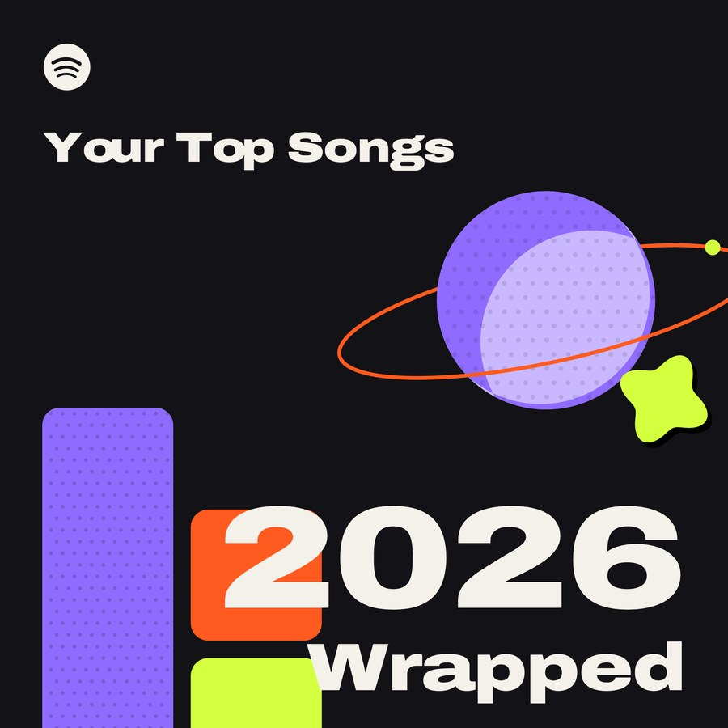
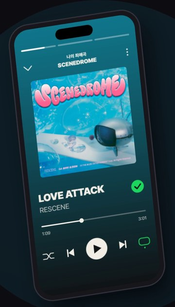
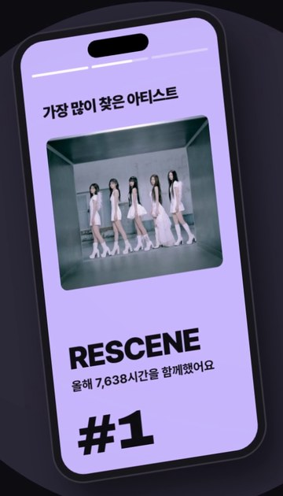
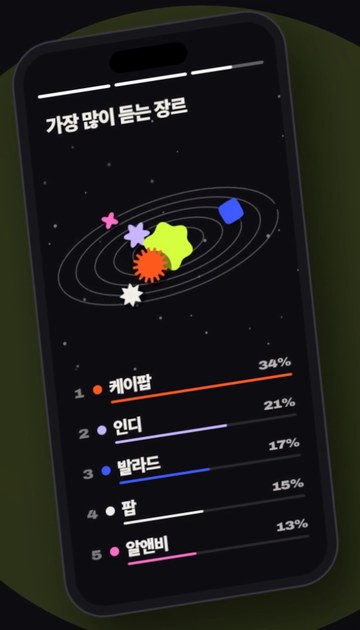

2026 연말결산 공개를 알리는 컨셉 프로모션 영상
세계 최대 규모의 음악 스트리밍 서비스.
매년 연말, 1년 동안 가장 많이 들은 노래·아티스트·장르를 통계로 보여주고, 그해의 최애곡을 모은 Top Songs 플레이리스트를 자동으로 만들어 줍니다. 결과는 숏폼처럼 넘겨 보는 세로 카드로 공개되어 SNS 공유로 이어집니다.
2026 Wrapped 공개를 알리는 30초 컨셉 영상. 세로 카드로 넘겨 보던 결산 경험을 가로 광고 화면으로 옮겼습니다.




포트폴리오용 컨셉 작업으로, 공식 스포티파이 광고가 아닙니다.